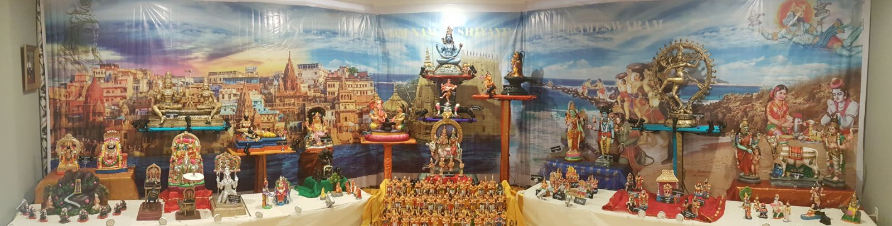

Shivoham is the theme this year inspired by our spiritual journey to Kasi and Rameswaram. In our golu display, we have tried our best to portray Lord Shiva in various forms seen in various temples in India, as seen in the photo below.
As you explore the upstairs golu, click on one of the dots below to find more details about that scene as well as a song rendered by young musicians you may know!
